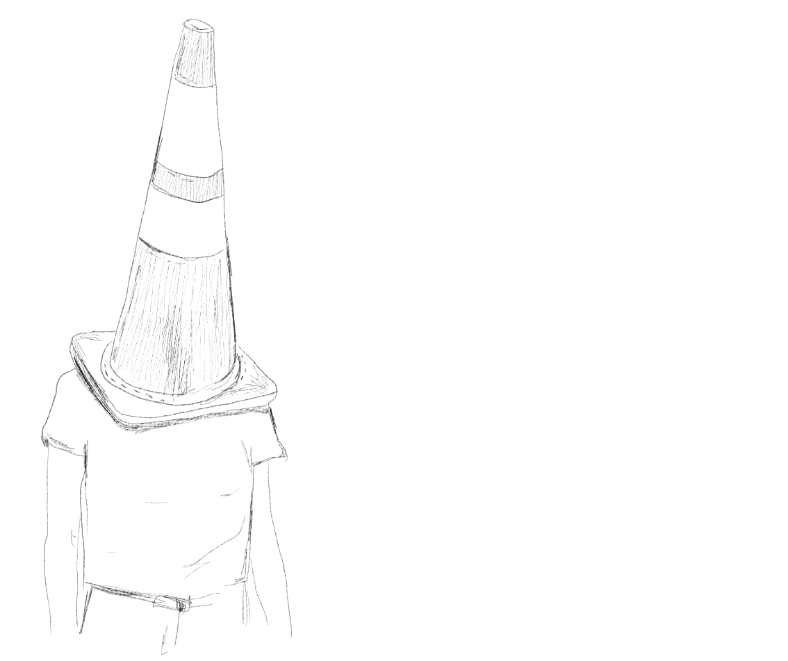

Leah and Phil's task was to bring an object as example of their spontaneity.
Leah
Phil
Well, this.. [puts a print on the table] is my object.
It is not the ute, its the boat. I got a phone call one day, it’s from my brother – this is at work. He is a very excitable fella, he is always trying to chase a buck, but he doesn’t have many bucks to start with. So he rings me up and he says: “RIGHT, I’ve got this really good deal, I just found this boat for sale, this guy wants to sell it. It’s like, six thousand dollars.” I say; “I don’t, I don’t have six thousand dollars!” “…but it’s worth about 15!” And he goes; “I’ll ring you back”, and hung up. About 10 minutes later I’m sort of sweating, thinking oh what’s he doing?
He rings me back, and he says: ‚ÄúHe‚Äôll take four thousand eight hundred, you gotta buy it!!‚Äù. And I‚Äôm like; ‚Äúmate, I‚Äôm not a boat owner, I‚Äôm not a boat buyer, I don‚Äôt know anything about boats, I don‚Äôt even have a boat licence‚Äù. He‚Äôs like; ‚ÄúBUT THIS IS GOING TO MAKE YOU MONEY üí∞‚Äù, and.. this happened in the space of 10 minutes.. and I go: ‚ÄúI‚Äôll think about it‚Äù. So I put the phone down, and sort of thought for a second, I pick the phone back up and said; ‚ÄúI‚Äôve just transferred you four thousand eight hundred dollars‚Äù and [laughing] he goes ‚Äúall right, it‚Äôs done‚Äù. So over the space of about.. what would it be.. eight minutes, 10 minutes, I was the proud owner of the Hustler! Which is, I think it‚Äôs a 5,7 meter long speedboat üòÖ ‚ĶBut, it is not very characteristic of me to buy a boat. I‚Äôm not a boat man. But there it is, isn‚Äôt she beautiful. I actually went out on it, on Friday. And it didn‚Äôt sink.
You’re properly just gonna end up keeping it, ey?
I don’t.. like I said, I’m not a.. it’s good fun being on a boat, but it’s not.. it’s just expensive. You’ve gotta insure it, register it, toe it around, store it. Well, it lives at his house, so he is eventually gonna ask for some money for it, to hold it. So.. yeah, I actually tonight – because the trailer is broken– offered a guy 800 bucks to swop the trailer over.. so I’m waiting for that phone call. So, I’m kinda sitting on the edge of a money pit about to fall in.. We’ll see how I go.
The story was, that the guy who had it; it had a different motor on the back, the motor was a lot bigger. And he bought a brand new boat, that had this motor on. So, he bought this boat, for that motor. And then this just sat in his backyard. His partner, apparently, has been telling him for weeks; you need to get rid of the boat. This is a Thursday, and she said; “If you don’t get rid of the boat, we’re getting a divorce” ☠️..
What
So that was how my brother reckons he was able to get it for the price he got it for – it was keeping a marriage together. Hopefully I can make some money off it, and also kept a marriage together.
Yeah?
So it is a win-win! Hopefully. This might bore you or interest you, I’m not sure. But boat trailers, right, they’re worth a lot of money. So our broken trailer, is… again, my brother who I seem to have a lot of trust in, has assured me that my trailer is worth about seventeen hundred dollars..

Ohh, has he üòâ He‚Äôs like a boat evaluator‚Ķor a con man, haha.
So, my object.. I was going to this party with a bunch of musician friends. At the time, I was like a lot younger maybe 22 or 23, and I was hanging out with this group of people that thought they were the 'prodigal son type musicians', you know. So whenever I used to go there, I was not allowed to play their instruments. And so, we're walking to the party, and I didn't even really want to go, you know. Then we walked past the music store and I, like, I only had 50 bucks, and I was like; okay, I'm going to buy an instrument, and take my own instrument. So.. this is what I ended up buying [rattling sound üéµ] as Leah pulls up a bright, red tambourine from her backpack]. And I just really rocked the party.

With the tambourine.
Yeah, with the tambourine.
It seems like it's easier to play, but it's not that easy. But it was funny when I went into the music store because I literally only had 50 bucks and I also wanted to buy, you know, the 1,5 litres of goon. So I need to buy that ‚Äì it‚Äôs properly 10 bucks. So I need a budget, yeah, alcohol and the instrument's worth. So I went in there. Tried out a few things like the glockenspiel, that kind of thing, but that's 60 bucks‚Äìcan‚Äôt afford that. And then, this; the sunlight was shining through the window, and I saw it sparkling, and I was like; WHAT is that!? I went over there and [abrupt tambourine-üéµ] hit it like that. I was like, shit yeah, I'm going to get that. It was 35 buck, so I was like Yeah! I can get a snack; I can get my goon. So I got it, and I went to the party, and everyone was like; Oh can I play with that? And I was like; naah, you can't. You can't. No. It's mine. And I literally held it for the whole night.
Do you know scrumpy hands?
Yeah, so to one hand I taped the goon, and I taped the tambourine to the other hand. And I had that on all night.
It's a torturous torturous game.
Yeah because eventually you really need to go to the toilet. And it's difficult. Especially when you got a tambourine. But it was good. Like it was the first time with that group of people there. I kind of felt like I had power. And even when people got drunk, and you hear them talking pretentious shit, I just [making rattle üéµ with tambourine].
Yeah, when someone is talking and drinking a lot, just make this [rattle üéµ]. You can also build the suspense up. Just rattle the suspense.
Yeah, there are heaps of things you can do.. tap this part, make a bit of music [plays music üéµ]. Now I've had eight or so years to develop my tambourine skills. This one doesn't get as much play anymore. I play other instruments too. But I always got the memory of it calling me with sunshine ‚òÄÔ∏è and being in my budget. I think the key thing was being in the budget, the goon budget. You know.
That's impressive. Even with budget for having a couple of cheeseburgers on your way home. That's a good night.
Yeah, and I had like an actual artefact to show:

And not like a traffic cone on your head or a street sign that you stole!
‚Ķ
It's cool. I always wanted to know. When you see music, and there's a tambourine player, can you actually write music for a tambourine?
Yeah, it's more like music you write for a drummer. You know it's more like rhythm than actually notes. Yeah, you can definitely do that.
There is no quiet. I feel like it's sort of symbolic of the right now; I'm just going to be noisy. And there's no subtle way to come in with a tambourine either. It's on, or it's off. It's not like guitar where you can just slowly kind of.. Ohh, the tambourine is coming in.
It's such a raw sound, and sort of gets you!‚Ķ Like I was saying, how it's not quiet when you're walking around. You got it on you; everything has a beat. Every footstep is like [rattle üéµ].

Yeah, raw, that's exactly what I'd describe it as. When I first started playing gigs live and stuff I used to play just with an acoustic guitar and this, and just put it on the ground, and tap my foot on it. It's where it all started, hehe.
Was that in New Zealand or here?
Yeah. I've played gigs here too [Melbourne], but not very recently.
Yeah. From New Zealand. From Dunedin. Music City, hehe.
That's awesome, do you sing as well?
Yeah, I do. My last gig was kind of horrendous. The sound guy didn't know what the hell he was doing. It's a really small room, that had a lot of acoustic sounds, you know, and it was really loud, and I keep getting feedback on the monitor as well. Pretty bad.
…
You know, when you go to a bar somewhere, and you had a really good night, lots of beers. And then you're like; I got to go back there. But then it's daytime, and you're sober, and you go in there, and you're like; this place is shit. No, this place is really shit.
Yeah it's usually only cool because you're with all your mates, everyone's on the same drunk level. Yeah, when you go in there during the day it's usually just that one dude who goes there every single day.
And he looks at you when you walk in, thinking; what are you doing here? Giving you the stare.
Yes, maybe he's playing hoping to win the big one. Kind of like investing in a boat, haha.
You're right, it is gambling!
You've got to be in it to win it.
But now I'm the guy who owns the boat, with all my mates, to take out on the boat with me.
…
Have you played many gigs in Melbourne?
I was in a band for a little while, but that fell through. You really got to be with the right people.
Be with people who actually embrace the tambourine üòâ.
I think it's more, you know, there are some people who just want to be in a band because they think it's cool, but they're not actually that into music. They just want to smoke drugs and drink alcohol. You know. I'm not saying I don't want to do those things, but you want to play music.
I've been recording an EP for like four years or something like that. So I just keep rewriting things and re-recording things, and I guess, as time goes by it gets better as well. Sort of like if you're doing a painting and you started out not knowing how to paint really. And then you start in one corner and went around; it looks quite different. You'll develop your technique.
Yeah, I could also write a theme song for your boat; [sings] Hustler [tambourine rattle üéµ].
I'd reckon that would work. That's hilarious. So, do you think you'll ever finish the EP?
Like. I hope so. I'm at a point now where I like have, sort of embraced the music industry and female community in New Zealand a bit more. It has given me more space to move a bit. I've grown up with lots of dude musicians but not really known that many other women. It's been kind of sexist sometimes. It's also when you're in that space with drunk dudes; they feel like they can just grope you, it's not really like you want to be there, you know. It's like they either want to fuck you or they don't fuck with you at all. I've kind of moved away a lot from that. And yeah, see what happens.
Yeah. How different is the scene here to over there?
There are lots of venues here. Lots of venues, I think it's the most live venues of any city in the world, in Melbourne. It's sort of more diverse, and they have more structure of things where they're trying to support women and you know, to have more opportunities. Especially in the indie music scene, I think there is stronger community and more space for female musicians, whereas in New Zealand it's kind of a bit bro-culture kind of shit you know. But I think it's getting better because there's been a lot of really amazing female musicians coming out. So.. I'm forever hopeful. I did this Girls Rock thing, which is like mentoring 12–18–years–old in music. In a week they write a song, and then perform that original song at the end of the week. And even seeing that. They don't have the same conditions that I had to put up with when I was their age, which means that they don't hold the same insecurities, which I think is pretty cool.
It's like the preconception of what the industry is gonna front up to them. It opens up new doors.
Yeah! Just being in that space with young people who don't have the same preconceptions about things, that's really quite transformative. That makes you change as well, because you get kind of stuck in this idea of the way that things are but when they're so optimistic, and they don't have that weight, you're like, oh maybe it's possible.
It sort of rejuvenates your belief in that. That's really cool.
…
I guess.. I just had to go for it [the tambourine].
It's quite the impulse purchase, I like it.
…
It's cool to have. Almost like a memento of my music journey as well.